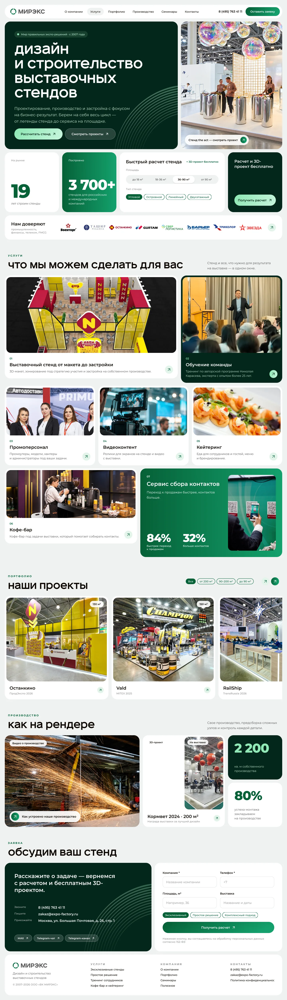
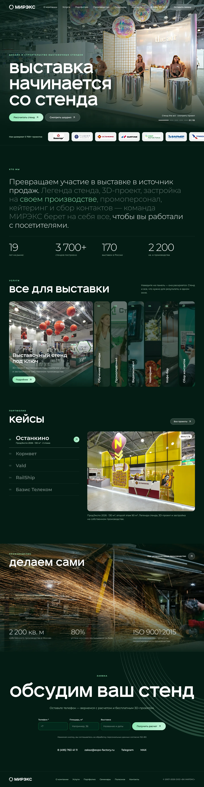

mir-ex.ru homepage redesign
Three art directions for a B2B homepage; the chosen one taken to a full desktop page and a 390 px mobile version.
Brief
The company asked for a homepage that feels more modern and more like them. Instead of one mock-up I proposed three clearly different directions, all built from the same design system components, so the choice was about tone and structure, not about buttons.


Direction A · Architectural bureau
The direction the team chose treats the site like an architect's portfolio: a light editorial layout, hairline rules, dimension lines drawn over photos, an index-style list of services with hover previews and an editorial grid of projects.
I developed it into a complete page of 17 blocks — from the announcement bar and hero through numbers, clients, services and formats to the final CTA and footer — and adapted every block for a 390 px mobile layout. Scroll inside the frames to see the full pages.